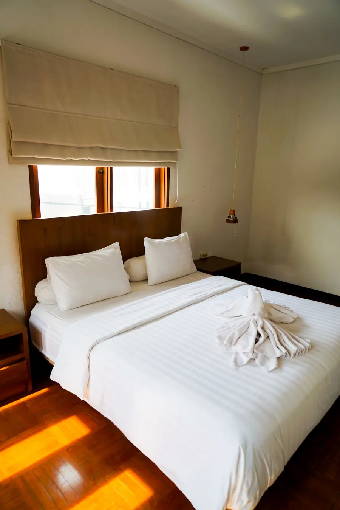
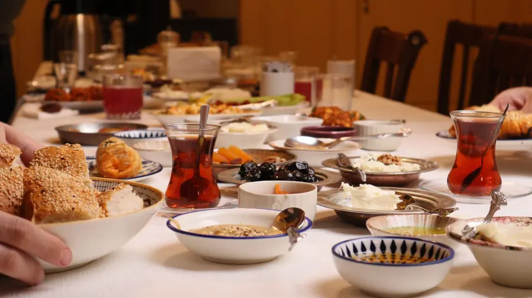
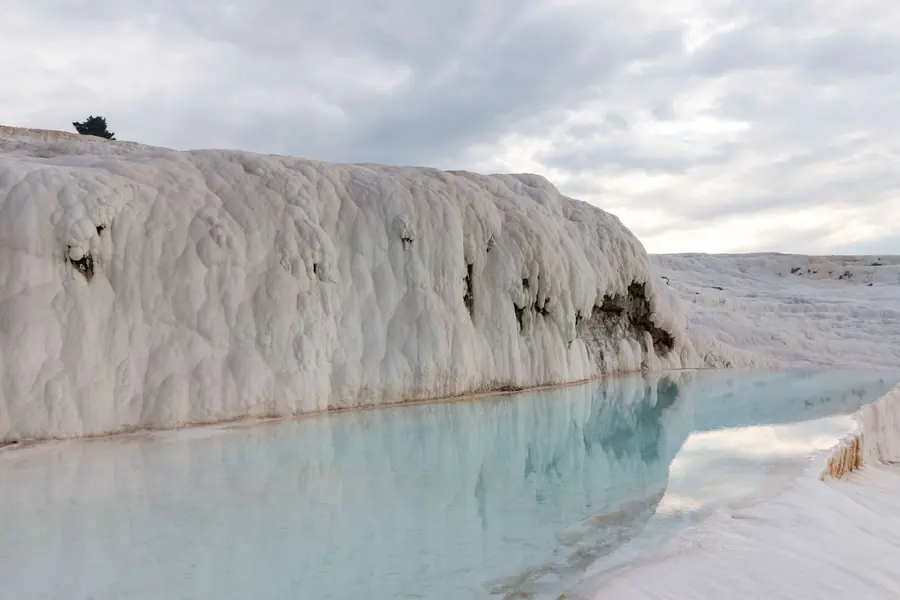
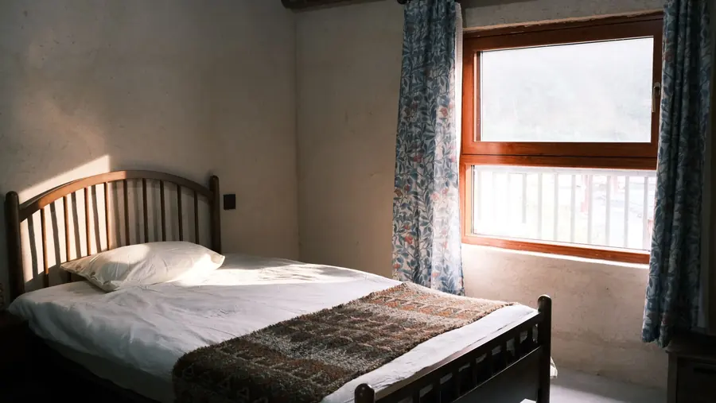
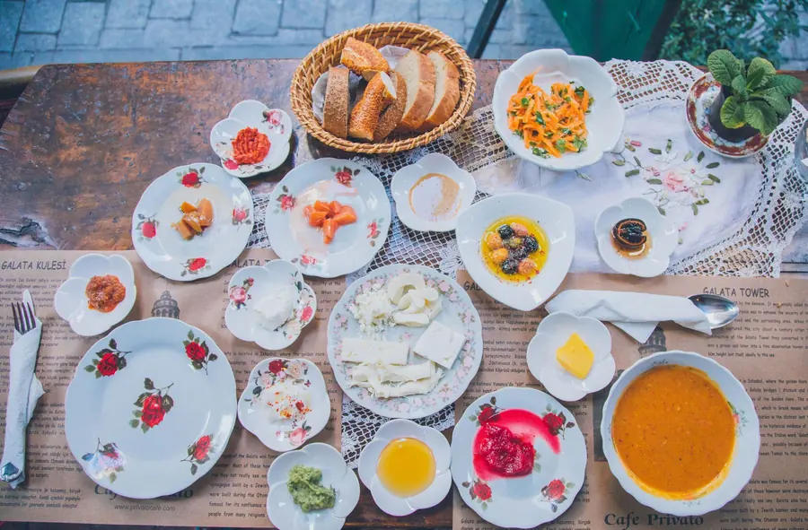

ÖRNEK OTEL ODASIÇift kişilik oda
İki kişi için sade, temiz bir oda. Yatak tipi ve olanaklar yayında kendi bilgilerinizle yazılır.
Fiyat: sorunuz
Oda tiplerine bakın, tarih ve kişi sayısını seçin; talebiniz hazır mesaj olarak yazılsın. Aracı yok, doğrudan otelle konuşursunuz.
Belediye Cd. No:19, Karahayıt, Pamukkale / Denizli
 Temsilî fotoğraf
Temsilî fotoğraf

Aşağıdakiler yerleşimi göstermek için örnek kartlardır. Gerçek oda tipleri, yatak düzeni ve olanaklar yayından önce sizden alınır.

ÖRNEK OTEL ODASIİki kişi için sade, temiz bir oda. Yatak tipi ve olanaklar yayında kendi bilgilerinizle yazılır.
 ÖRNEK OTEL ODASI
ÖRNEK OTEL ODASIÇocuklu aileler için daha geniş bir oda fikri. Kaç kişilik olduğu ve ek yatak durumu sizden alınır.

ÖRNEK OTEL ODASIPencereden doğal ışık alan bir oda örneği. Manzara ve kat bilgisi gerçek odalar belli olunca yazılır.

Temsilî fotoğrafKonuk notlarında en sık anılan şeylerden biri kahvaltı, bir diğeri de işletme sahibinin ilgisi. Menüyü, saati ve sofranın kendi fotoğraflarını yayında birlikte ekleriz.
 Temsilî fotoğraf
Temsilî fotoğrafKarahayıt, demir oksitli suyun yer yer kırmızı-turuncu bıraktığı terasları ile bilinir; Pamukkale'nin beyaz travertenleri de aynı bölgede. Genel coğrafi bilgidir; ziyaret koşullarını gitmeden teyit edin.
Fiyat ve oda durumu bu önizlemede yok: talebinizi iletirsiniz, müsaitlik ve seçenekler size dönülür. Sağdaki mesaj hazır gelir; önce aramak da isteyebilirsiniz.
Temsilî fotoğraflar. Yayında otelin odaları, sofrası ve bahçesi kendi karelerinizle yer alır. Büyütmek için bir kareye dokunun.
Konakladınız mı? Google'da yorumunuz sonraki misafire yol gösterir.
Örnek yer. Uydurma puan ya da yorum göstermeyiz; yayında doğrudan yorum yazma bağlantınız konur. Şimdilik Google Haritalar kaydına gider.Temsilî fotoğraf